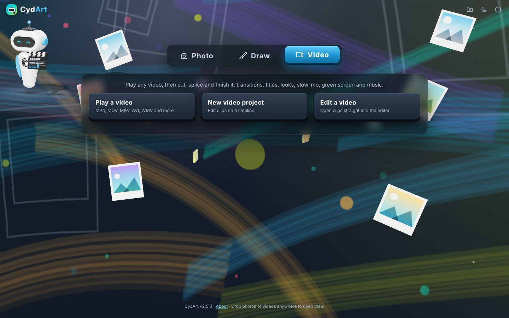
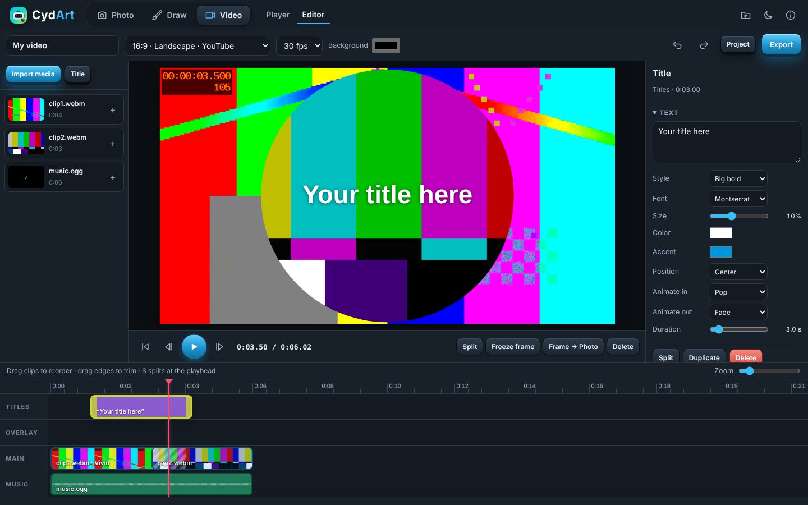
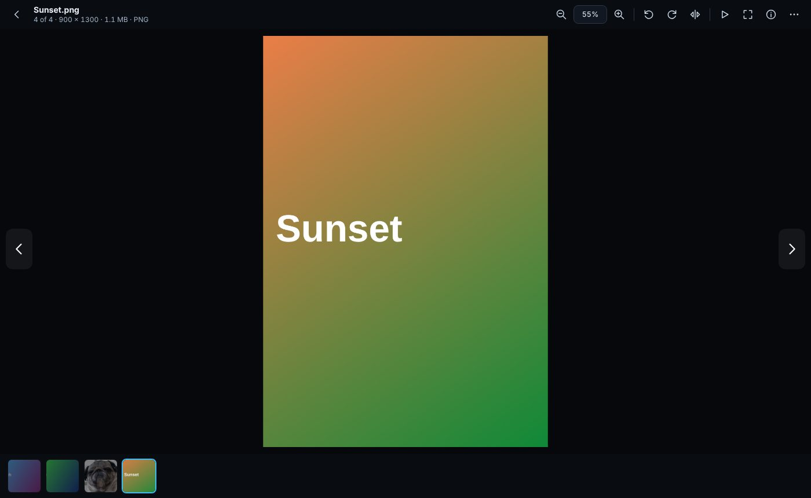

Version 2.1.0 · Lite 2.1.0 · Ready
CydArt
Photo editor, paint studio, video editor, viewer and library, starring Cydni. Opens HEIC, RAW, PSD and 270+ image formats, plays and edits MP4, MOV, MKV, AVI, WMV and more, and installs as your default photo and video app alongside the fast CydArt Lite viewer. Formerly CydPhoto.
Download
cydart-source.zip
This is the source package. On a PC with the Cydcor code-signing certificate, double-click BUILD CYDART.cmd to make the signed installer for everyone. The steps are below.



Make the signed Windows installer
- Unzip
cydart-source.zipon a Windows PC that has the Cydcor code-signing certificate. If the certificate is on a USB token, plug it in. - Double-click
BUILD CYDART.cmd. The first time, it installs Python 3.13, Inno Setup and the Windows signing tools if they're missing, then builds and self-tests both apps. - Approve any Windows prompts for those installs, and enter the token PIN if asked. It signs
CydArt.exe,CydArtLite.exeand the installer, then checks the signatures. - The
Outputfolder opens withCydArt-2.1.0-Setup.exeandCydArt-2.1.0-release.zip: the signed installer, checksums,DEPLOY.mdand a default-apps file for IT, ready to share.
No certificate on this PC? It still builds, names the installer -UNSIGNED and tells you. Prefer to run it without building? In the cydart folder:
What's in the package
- Apps
- CydArt (photo, paint, video, library) and CydArt Lite (viewer). One installer with check boxes: install either or both. Replaces CydPhoto.
- Defaults
- Registered with Open with and Settings → Default apps for 32 photo types and 23 video types, including HEIC, RAW, MP4, MOV and MKV.
- Opens
- 270+ formats: HEIC/HEIF, camera RAW, TIFF, layered PSD, AVIF, JPEG XL, JPEG 2000 and every web format.
- Video
- Plays anything (FFmpeg bundled). Timeline editor: splice, crop, transitions, titles, looks, slow-mo, green screen, music, scene export, frame screenshots. 33 export formats incl. HEVC, ProRes, GIF and audio.
- Convert
- Batch-convert any mix of photos, videos and music to any format, with resizing.
- Saves
- True HEIC, PNG, JPEG, WebP, AVIF, layered PSD, TIFF, GIF, BMP, ICO, JPEG XL, PDF, SVG and more.
- Signing
- SHA-256 Authenticode with RFC 3161 timestamp. Picks the Cydcor certificate automatically.
- Offline
- Everything bundled. Photos and the Library stay on the PC.
- Needs
- Windows 10/11 64-bit with Edge WebView2 (built in). Building needs Python 3.11 to 3.13.